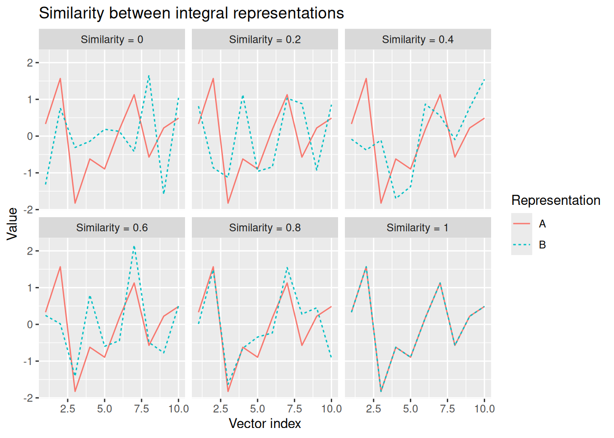
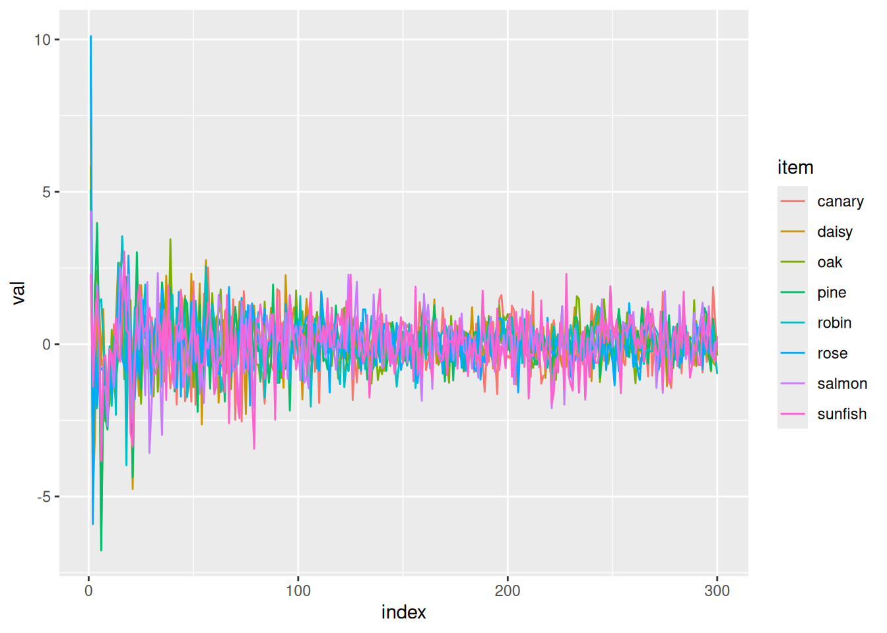
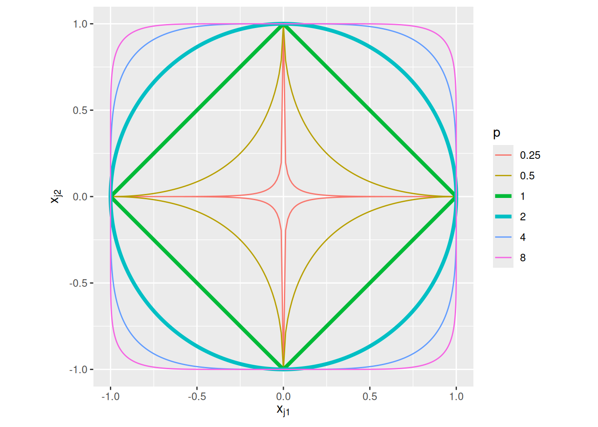
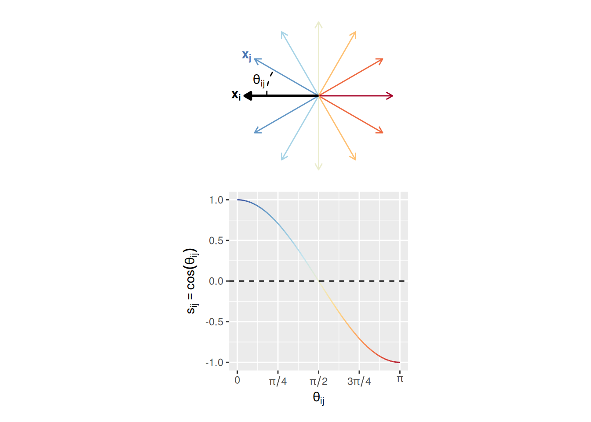

10Distributed representations, similarity, and recognition
In the previous chapter, we were introduced to the Exemplar-Based Random Walk (EBRW) model. We saw how it could be used to model behavior in a recognition memory task in which a participant studies a number of items and is then presented with a “probe” item and must decide whether or not the probe was among the items that were studied. The EBRW explained such decisions in terms of summed similarity between the probe and each studied item. In the EBRW, similarity was a function of the distance between representations of the probe and study items. The probe and study items were represented as points in a multidimensional space. Each dimension of this space corresponds to a “feature” or “attribute” that an item could have, with different coordinates corresponding to different values of that feature/attribute. Often, these features/attributes can be identified with particular physical characteristics of an item (like hue, brightness, roughness, etc.).
The EBRW is a great example of how a computational cognitive model can help explain behavior in terms of latent representations that someone forms of their experience. It is also an example of a distributed representation of an item, in that an item is characterized by the particular distribution or configuration of values it has across a number of features/attributes. In this chapter, we explore more general forms of distributed representations and more general ways that we can model similarity between representations. We will continue to model representations of items as sets of numbers—that is, as a vector—but we will abandon the notion that each element of the vector has a direct relationship with physical characteristics of the item.
10.1 Representations
While it is beyond the scope of our course to delve into the philosophy behind the idea of “representation”, it is worth spending some time to think about what a “representation” is in the context of a cognitive model, so that we can at least arrive at a reasonable operational definition of the term. For additional discussion, see [].
For our purposes, we can define a representation as a formal entity posited by a cognitive model that enables certain kinds of processes that, when applied to that representation, enable the model to make predictions about performance in a particular task context. You may notice that this definition of a representation is tied to both the processes posited by a model as well as the kinds of predictions the model is expected to make. This is because a representation only has meaning in the context of these other aspects of the model.
We can think of a representation as a kind of “code” that conveys information that can be “read” by a suitable process. To take a concrete, if not exactly cognitive, example, consider the task of sorting mail. Imagine that we are working in a distribution center that receives packages that are intended to go to different parts of the country. Our job is to route those packages to the post office nearest their final destinations. We can accomplish this task by reading (processing) the ZIP codes on each package. The ZIP code is a numerical representation of the geographical area for which a package is destined, which when processed by an appropriate reader enables them to route the package to the correct office. This example illustrates the essential characteristics of a representation:
A ZIP code only serves as a representation of geographical area when processed appropriately. If you don’t have sensory organs to see the numbers or you do not know how to interpret the numbers, the ZIP code is meaningless. As noted above, a representation only has meaning in the context of the processes applied to it to accomplish a task.
There isn’t necessarily just one way to represent something. We could write ZIP codes with Roman numerals instead of Arabic numerals—while this would entail changing the kind of process applied to the ZIP code (because the two formats must be read in different ways), both are legitimate ways of representing geographical regions in the context of the mail-sorting task. We could even use a graphical representation, like a map with a dot indicating the destination. Again, such a representation would need to be processed appropriately.
The structure of a representation may or may not enable multiple kinds of processes to be applied to it, potentially to serve different tasks. For example, ZIP codes do not just serve as labels for different regions—nearby regions have similar ZIP codes. This is because the earlier digits indicate broad geographic regions while later digits represent narrower subdivisions of those larger regions. Therefore, one could apply a comparison process to these ZIP codes to determine not just whether two packages were going to the same region, but whether they were going to nearby regions. This would enable sorting to be robust to certain kinds of contingencies. For example, if the post office in one region were closed, the comparison process could allow you to determine the nearest open office to send the package to. A graphical representation of the postal destination would allow for even finer gradations of similarity.
Positing a representation does not necessarily commit to any particular way that such a representation may be implemented. Here, I use the term “implementation” in the same way as in the three levels of description posited by Marr (1982). A ZIP code can be “implemented” as ink on a page, as pixels on a screen, as an etching on a tablet, as a sound wave (if spoken aloud), etc. While these different implementations of a ZIP code would entail different implementations of how they were processed, they do not alter the form or content of the ZIP code. The broader point is that the kinds of representations posited by cognitive models are defined not by their physical forms, but rather by their abstract structure and the kinds of processes they support.
We can see how these principles manifested in the random walk/diffusion/race models we explored earlier. As we discussed, these models represent a decision-maker’s current state of mind in terms of one or more numbers that represent the degree to which the decision-maker favors each option they are choosing between. Representing evidence as a number enables an evidence accumulation process that can be modeled via the mathematical operation of addition. These models do not necessarily claim that the numbers that represent accumulated evidence are “implemented” in any particular way. That said, as we will see later in this course, it is possible to relate representations of accumulated evidence to scalp (Philiastides et al., 2006) and single-neuron (Purcell et al., 2010; Purcell et al., 2012; Shadlen & Newsome, 2001) electrophysiology as well as fMRI BOLD signals (Turner et al., 2013).
10.2 Types of vector representations
Many cognitive models make use of representations that take the form of vectors, that is, as ordered collections of numbers. We saw one kind of vector representation in the EBRW. In the EBRW, each item was represented as a vector of coordinates that specified that item’s position within a multidimensional space. That representation enabled the EBRW to operationalize similarity as a function of distance between vector representations of items. We now consider other broad classes of vector representations and, in the next section, we see how different kinds of representations enable other operationalizations of similarity. Finally, we see how similarity can be used to model performance in different kinds of tasks.
In the examples below, to keep things concrete, let’s imagine a participant is engaged in a task that involves making judgments about different concepts. There are eight concepts, each of which is a living thing from a particular category (these concepts are the same ones used in the examples from Rogers & McClelland (2004)):
Pine
Oak
Rose
Daisy
Robin
Canary
Sunfish
Salmon
You may notice that these concepts can be grouped together in different ways. For example, we could divide them up into plants and animals; into trees, flowers, birds, and fish; into things that are red, green, or yellow; etc. The kinds of vector representations we consider below will illustrate how these relations can be encoded in the vectors.
10.2.1 Localist representations
Perhaps the simplest and most direct way to represent each of the eight concepts above is to use a localist representation. The term “localist” refers to the idea that there is a one-to-one mapping between each concept and its “location” within a vector. Specifically, with a localist representation, each vector has as many entries as there are things to be represented. So if we have eight concepts, each of them will be represented with an eight-dimensional vector. Each of those vectors will contain zeros except for a “1” in exactly one entry in the vector. The “location” of the 1 is what determines which concept the vector represents.
The matrix below gives an example of a set of localist representations of each of the eight concepts above. Each row is the representation of a different concept.
Note that there is nothing special about having the 1’s on the diagonal—or even about using 1’s in the first place! For example, the matrix below is another example of localist representations of the same set of concepts:
We could even replace all the 0’s with NAs or -99 or any other value that we agree to interpret as a kind of “background”. Ultimately, what matters about a localist representation is that what a vector represents is indicated by which entry in the vector is “not background”.
10.2.2 Separable distributed representations
Another defining characteristic of a localist representation is that it does not allow for gradations of similarity. Either two representations refer to the same thing or they refer to different things. Distributed vector representations, like those used in the EBRW, allow for representations to be partially similar to one another.
Although it is not necessarily standard terminology in the field, I think it is important to distinguish between separable and integral distributed representations. The difference between them is that, with a separable distributed representation, it is possible to identify the elements of the vector with particular attributes/features/dimensions of the items being represented. With an integral distributed representation, the individual elements of the vector have no interpretation on their own—instead, different items are represented by different patterns of values across all the elements of a vector. This distinction probably seems pretty abstract, so let’s dig into some concrete examples.
Returning to the set of concepts above, one way to construct a set of separable distributed representations is to consider different attributes that each concept may or may not have. Each element of the vectors corresponds to a different attribute. For each concept, its representation will have a value of 1 in the entries corresponding to attributes that the concept possesses and a value of 0 in the entries corresponding to attributes that the concept lacks. This is illustrated below:
Although we will consider similarity more deeply in the next section, note that the distributed representations above make it possible to judge similarity based on the extent to which two concepts’ representations do or do not share attributes. Indeed, the different categories (plants/animals) and subcategories (trees/flowers/birds/fish) to which the concepts belong are implicit in which attributes are shared between concepts.
In the example above, each entry in the vector corresponded to a distinct attribute. It is also possible to construct separable distributed representations where attributes are encoded with sectors of a vector. For example, rather than treating is_red, is_yellow, and is_green as different attributes, we might assign a “sector” consisting of several entries to represent the color associated with a concept. Maybe that sector consists of three entries, for hue, chroma, and lightness, as in the example at the beginning of the EBRW chapter.
Relatedly, distributed representations can use continuous values—they are not restricted to binary indicators of the presence/absence of an attribute. For example, instead of an attribute called is_big, we could have a size attribute which corresponds to the size of the concept being represented.
For example, here is how one might represent color and size for each of the concepts in our running example:
With a separable distributed representation, we can increase the dimensionality of the vectors as much as we want. For example, a separable distributed representation might consist of hundreds of dimensions. However, it is unlikely that all of these dimensions would be relevant to any particular task. There may also be capacity limits on the number of dimensions that someone could make use of at any particular time. This highlights one final, but important, aspects of a separable distributed representation: Because different kinds of information about an item are represented in different elements of the vector, separable distributed representations enable us to model attention to particular kinds of information. Specifically, as we shall see below, we can assign weights to each dimension that represent the degree to which someone attends to that dimension within a given task context. A separable distributed representation can thus support performance in many different tasks by assuming that some tasks entail attention to different elements of that representation.
10.2.3 Integral distributed representations
The final kind of vector representation we will consider are integral distributed representations. The difference between integral and separable distributed representations is that the vector elements of an integral representation cannot be identified with distinct features/attributes of the items. Rather, an item’s representation consists of the complete pattern of elements across the vector. An integral representation can thus be thought of as a “holistic” or “configural” representation, because its individual elements can only be understood as part of the complete pattern of entries in the vector.
An analogy may help clarify this admittedly abstract issue: Consider baking a cake. Before you bake the cake, its ingredients are separable: You have a pile of flour, a carton of eggs, a jug of milk, etc. One could imagine constructing a separable distributed representation of the pre-baked cake in which each element corresponded to a particular ingredient and the entries specified the quantities of each ingredient. However, once the ingredients are mixed and the cake is baked, it is no longer reducible to its component ingredients. Those same ingredients, in those same quantities, would not necessarily result in the same cake—it is the particular way in which the ingredients are combined and prepared that results in the final product. The way any individual ingredient contributes to the baked cake depends on its relationship to all the other ingredients in the cake. In that sense, the baked cake is best represented using an integral as opposed to separable representation.
Unlike separable representations, then, integral representations make it impossible to model giving different amounts of weight/attention to different attributes of an item. This is an important distinction, and is why I adopted the terms “integral” and “separable” to distinguish between these kinds of representations. Garner & Felfoldy (1970) used those terms to distinguish between cases in which a participant could selectively attend to one feature while ignoring others (separable) and cases in which a participant could not ignore other features (integral).
It is still possible to conceive of similarity between integral representations. It is just that similarity depends not on sharing specific elements of a vector, but instead on having similar patterns of values across elements. To visualize this, we can graph a vector representation with the index of the elements along the horizontal axis and the value on the vertical axis. Integral representations are similar to the extent that the resulting graphs have similar shapes. This is illustrated below.
Code
x <-rnorm(n =10)x <- (x -mean(x)) /sd(x)s_vals <-round(seq(0, 1, length.out =6), 2)toPlot <-c()for (s in s_vals) {if (s <1) {while (TRUE) { y <-rnorm(n =10) y <- (y -mean(y)) /sd(y)if (round(cor(x, y), 2) == s) break } } else { y <- x } toPlot <-rbind( toPlot,tibble(sim_factor =paste("Similarity =", s), rep ="A", i =1:length(x), val = x),tibble(sim_factor =paste("Similarity =", s), rep ="B", i =1:length(y), val = y) )}toPlot %>%ggplot(aes(x = i, y = val, color = rep, linetype = rep)) +geom_line() +facet_wrap("sim_factor") +labs(x ="Vector index", y ="Value", color ="Representation", linetype ="Representation", title ="Similarity between integral representations")

It will not have escaped your notice (especially if you look at the code for the above chunk) that similarity between integral representations can be modeled in terms of their correlation. We will explore this more below.
For now, we can return to our running example to see what integral distributed representations of our eight concepts might look like. In fact, the example representations below are based on ones derived from a statistical model of word co-occurrence called Latent Semantic Analysis (Landauer & Dumais, 1997). As noted below, many machine learning models make use of integral distributed representations, and some of these are even plausible cognitive models of learning, which we will explore in the next chapter.
Of course, the raw numbers alone are not especially easy to interpret. The graph below may make it a bit easier to see how items in the same category have vector representations with similar “shapes” whereas items from different categories have different “shapes”. That said, since these vectors have 300 dimensions, I only plot the first 30 entries!
Code
toPlot <-c()for (i in1:nrow(lsa_reps_examples)) { toPlot <-rbind( toPlot,tibble(item =rownames(lsa_reps_examples)[i], index =1:30, val = lsa_reps_examples[i,1:30]) )}toPlot %>%mutate(item =factor(item, levels = concept_names)) %>%mutate(category =factor(item, levels = concept_names, labels = category_names)) %>%mutate(exemplar =factor(item, levels = concept_names, labels =rep(c("A", "B"), length(concept_names) /2))) %>%ggplot(aes(x = index, y = val, color = item)) +geom_line() +facet_wrap("category")

Of course, this is all just based on our visual impressions—we will now explore different ways of operationalizing similarity between representations. We will then see how to incorporate similarity into models of behavior.
10.3 Similarity between distributed representations
As noted earlier, different kinds of representations enable different ways of operationalizing the similarity between those representations. This is important because similarity is a core construct in many cognitive models, like we saw with the EBRW. Indeed, the EBRW’s approach to similarity is the first we will consider.
10.3.1 Transformed distance
Recall that the EBRW operationalized similarity as an exponential function of distance between items. Specifically, the similarity \(s_{ij}\) between representations of items \(i\) and \(j\) was defined as \[
s_{ij} = \exp \left(-c d_{ij} \right)
\] where \(c\) was a sensitivity parameter and \(d_{ij}\) is the distance between \(\mathbf{x_i}\), the vector representing item \(i\), and \(\mathbf{x_j}\), the vector representing item \(j\): \[
d_{ij} = \left( \sum_{k = 1}^D w_k \left| x_{ik} - x_{jk} \right|^p \right)^{\frac{1}{p}}
\] where \(D\) is the number of dimensions in each representation, \(w_k\) is the weight given to dimension \(k\), and \(p\) is a new parameter that we just added for this chapter. The new parameter \(p\) makes the distance formula more general. When \(p = 2\), we get the Euclidean distance we used in the last chapter. But \(p\) can, in principle, be any nonnegative number; this more general distance formula is known as a (Minkowski distance)[https://en.wikipedia.org/wiki/Minkowski_distance].
The choice of \(p\) reflects how differences in different dimensions contribute to the overall distance. When \(p = 2\), corresponding to Euclidean distance, the distance (and therefore similarity) between representations only depends on how far apart their vector representations are, not their orientation relative to the dimensions of the space. Another common choice of \(p\) in cognitive models is \(p = 1\), corresponding to the “city block” or “taxicab” distance. When \(p = 1\), the distance is the sum of the absolute differences between vector representations. As a result, distance (and therefore similarity) depends on how the two items are oriented with respect to the dimensions of the space.
We can visualize the effect of different choices of \(p\) by drawing contours of equal distance. We can imagine assigning item \(i\) to have a vector representation of \((0, 0)\) and then consider the all the possible positions of item \(j\) that would result in a distance \(d_{ij} = 1\). That’s what is shown in the graph below:
Code
expand_grid(p =c(0.25, 0.5, 1, 2, 4, 8), theta =seq(0, 2*pi, length.out =501)) %>%mutate(x =cos(theta)) %>%mutate(y =sign(sin(theta)) * (1-abs(x)^p)^(1/ p)) %>%ggplot(aes(x = x, y = y, color =factor(p), group = p, linewidth =factor(p))) +geom_path() +coord_equal() +scale_linewidth_manual(values =c("0.25"=0.5, "0.5"=0.5, "1"=1.5, "2"=1.5, "4"=0.5, "8"=0.5)) +labs(x =expression(x[j1]), y =expression(x[j2]), color ="p", linewidth ="p")

When \(p = 2\), the contour of equal distance is a circle—distance is irrespective of the orientation relative to the two dimensions of the space. When \(p = 1\), the contour of equal distance is a diamond—distance is the sum of the differences on each dimension. As noted above, most cognitive models adopt either \(p = 1\) or \(p = 2\), but other values of \(p\) are entirely possible. When \(p\) gets really big, the contour of equal distance approaches a square—distance depends on the maximum difference. When \(p\) gets really small, the contour of equal distance approaches a “star”—distance depends on the minimum difference.
A major conceptual point to take from the preceding discussion about the Minkowski distance parameter \(p\) is that, whenever \(p \neq 2\), we need to take the dimensions of the space seriously. When \(p \neq 2\), distance depends on which dimensions exhibit which differences. The resulting distance is only interpretable if those dimensions are interpretable, in turn. As a result, this approach to similarity is best suited to separable distributed representations.
For similar reasons, attention weights \(w_k\) only make sense to apply to separable distributed representations. If the elements of a distributed representation cannot be interpreted as referring to different attributes/features, as with an integral distributed representation, it makes little sense to assign those elements different attention weights. Of course, there is nothing stopping you from building such a model—it just will not have a very clear cognitive interpretation.
To give a concrete example of how the transformed distance approach to similarity can be implemented in R, we can adapt some of the code we wrote for the EBRW. This example uses the size and color representations for the eight concepts used in the examples in the previous section.
Code
# List names of items and attributesconcept_names <-c("Pine", "Oak", "Rose", "Daisy", "Robin", "Canary", "Sunfish", "Salmon")sep_attribute_names <-c("size", "hue", "chroma", "lightness")# Define matrix of representationsseparable_distributed_reps <-matrix(c(50, 131, 36, 27,40, 20, 60, 16,0.1, 3, 58, 79,0.2, 52, 100, 50,0.3, 9, 63, 38,0.1, 60, 100, 63,0.5, 32, 100, 59,1, 5, 99, 71), nrow =8, ncol =length(alt_attribute_names), byrow =TRUE, dimnames =list(concept_names, alt_attribute_names))# The "c" parameter representing sensitivitysensitivity <-0.01# The "p" parameter representing the Minkowski parameterminkowski_p <-1# These are the weights given to each of the four dimensions.attention_weight <-c(1, 1, 1, 1)# By convention, these weights are constrained to sum to 1.attention_weight <- attention_weight /sum(attention_weight)# First, define an empty distance matrixdistance <-matrix(0, nrow =nrow(separable_distributed_reps), ncol =nrow(separable_distributed_reps), dimnames =list(concept_names, concept_names))# Fill in each entry in the distance matrix for (i in1:nrow(separable_distributed_reps)) {for (j in1:nrow(separable_distributed_reps)) { distance[i, j] <-sum(attention_weight *abs(separable_distributed_reps[i,] - separable_distributed_reps[j,])^minkowski_p)^(1/ minkowski_p) }}similarity <-exp(-sensitivity * distance)print(round(similarity, 2))
Pine Oak Rose Daisy Robin Canary Sunfish Salmon
Pine 1.00 0.68 0.53 0.58 0.59 0.58 0.54 0.49
Oak 0.68 1.00 0.74 0.69 0.83 0.66 0.71 0.69
Rose 0.53 0.74 1.00 0.74 0.88 0.75 0.80 0.88
Daisy 0.58 0.69 0.74 1.00 0.79 0.95 0.93 0.84
Robin 0.59 0.83 0.88 0.79 1.00 0.75 0.82 0.83
Canary 0.58 0.66 0.75 0.95 0.75 1.00 0.92 0.85
Sunfish 0.54 0.71 0.80 0.93 0.82 0.92 1.00 0.90
Salmon 0.49 0.69 0.88 0.84 0.83 0.85 0.90 1.00
Go ahead, try it out yourself! You may notice that the sensitivity parameter is pretty small, see what happens if you increase it. In fact, that will be an exercise for us later!
10.3.2 Dot product
The dot product or inner product is a way of directly computing the similarity between two vectors, without first computing a distance between them. While transformed distance is the most common approach to modeling similarity in the GCM/EBRW, dot products have been used a lot in other models of memory, notably the Theory Of Distributed Associative Memory (TODAM; Murdock (1982)).
The dot product between two vectors is sum of the products of their elements. To get formal about it, the dot product between vector representations \(\mathbf{x_i}\) and \(\mathbf{x_j}\) is often written as \(\mathbf{x_i} \cdot \mathbf{x_j}\) (can you guess why this is called a dot product?). The dot product is defined as: \[
\mathbf{x_i} \cdot \mathbf{x_j} = \sum_{k = 1}^D x_{ik} x_{jk}
\]
Intuitively, the dot product quantifies the amount of overlap between two representations. Any time the two vectors have elements that are both large and both of the same sign, their dot product will be larger. That’s why the dot product is a useful way to operationalize similarity.
To make this concrete, let’s consider a pair of two-dimensional vector representations (so \(D = 2\) in this example). We will assume that \(x_{11} = x_{21} = 1\), i.e., that the first element of each vector representation equals 1. The second elements of each representation (\(x_{12}\) and \(x_{22}\)) will vary between -2 and 2. The colors in the graph below indicates the value of the dot product for each combination of values of $x_{21}The chunk of code below varies the elements of these vectors so you can see how their dot product is influenced by those changes.
Notice that the dot product is large and positive (i.e., very blue) whenever \(x_{12}\) and \(x_{22}\) are large and of the same sign, which happens in the upper right and lower left quadrants of the graph above. To the extent that \(x_{12}\) and \(x_{22}\) are large but of different signs, the dot product becomes negative (the red regions in the upper left and lower right quadrants). The dot product thus quantifies the degree to which the elements of each representation have the same sign, weighted by the magnitude of the elements of each representation.
While dot products can be computed with continuous values, they can also be computed for binary values just as well. For any element that contains a zero in the vectors being compared, that element will contribute zero to the dot product. Therefore, the dot product between representations that consist of ones and zeros is the number of elements for which both representations contain a one.
For example, using the concept features from earlier, the following is a matrix where each entry gives the dot product between the representations of the items in the corresponding rows/columns.
Pine Oak Rose Daisy Robin Canary Sunfish Salmon
Pine 7 6 3 3 2 2 2 2
Oak 6 7 4 4 2 2 2 2
Rose 3 4 7 6 3 2 2 3
Daisy 3 4 6 7 2 3 3 2
Robin 2 2 3 2 7 6 3 4
Canary 2 2 2 3 6 8 4 3
Sunfish 2 2 2 3 3 4 7 6
Salmon 2 2 3 2 4 3 6 7
It is worth taking a look at the code for this one, since R makes it easy to compute the dot products between many vectors simultaneously using the tcrossprod function, as illustrated in the final line of the code chunk above. R has two functions that implement particular forms of (matrix multiplication)[https://en.wikipedia.org/wiki/Matrix_multiplication], crossprod and tcrossprod. Specifically, tcrossprod returns the cross-product of an \(N \times M\) matrix \(A\) with the transpose of a \(K \times M\) matrix \(B\). The “transpose” of a matrix is what you get when you swap its rows and columns. So the transpose of matrix \(B\) has dimension \(M \times K\). The result is an \(N \times K\) matrix where the entry in the \(i\)th row and \(j\)th column is the dot product of the \(i\)th row of \(A\) and the \(j\)th row of \(B\). This is illustrated below.
So to get back to talking about dot products between vector representations, tcrossprod(concept_attributes) returns a matrix where the entry in the \(i\)th row and \(j\)th column is the dot product between the \(i\)th row of concept_attributes and the \(j\)th row of concept_attributes. Convenient!
As we saw, the dot product can be used to quantify similarity between separable distributed vector representations. It can also be used to quantify similarity between integral distributed vector representations. For example, this is the matrix of dot-product similarities between the integral representations of the concepts in our running example:
Code
knitr::kable(tcrossprod(lsa_reps_examples))
Pine
Oak
Rose
Daisy
Robin
Canary
Sunfish
Salmon
Pine
38573.968
37331.6943
18080.1644
3954.26442
8252.5993
4161.7246
1012.64213
12580.369
Oak
37331.694
59365.5215
31061.6833
5111.06152
11119.6447
3805.2614
703.56230
14579.626
Rose
18080.164
31061.6833
83666.0058
9616.77767
22586.7398
6677.3640
544.37714
12069.413
Daisy
3954.264
5111.0615
9616.7777
3147.26980
5174.1907
1266.2499
92.93532
1729.109
Robin
8252.599
11119.6447
22586.7398
5174.19071
25216.0414
4542.8128
307.62160
4887.937
Canary
4161.725
3805.2614
6677.3640
1266.24994
4542.8128
6624.3994
277.54518
1760.961
Sunfish
1012.642
703.5623
544.3771
92.93532
307.6216
277.5452
405.72158
2192.350
Salmon
12580.369
14579.6264
12069.4125
1729.10943
4887.9368
1760.9615
2192.34977
33261.839
10.3.3 Cosine similarity
As noted above, the dot product is sensitive to the magnitude of the values in the vector representations. This could be important if magnitude represents something important in the context of our model. For example, just like the EBRW allows for a “strength” parameter that can multiplicatively scale the similarity between two representations, we could imagine that the magnitude of the entries in a vector represents the “strength” or “salience” of the item that vector represents.
In some models, though, the magnitudes are irrelevant—instead an item is represented by the pattern of relative values in the vector. We can still use the dot product to quantify similarity, but we will first need to normalize each vector representation. Specifically, we will normalize the vectors such that their dot products with themselves are equal to 1. Referring back to the definition of the dot product above, the dot product of a vector with itself is the sum of the squares of the entries in the vector. So if we divide each entry in a vector by the square root of the sum of the squared entries, we obtain our normalized vector representation.
We can see how this works by imagining that we have two integral distributed vector representations, which the code below randomly generates and then shows.
Code
x_1 <-rnorm(n =10, mean =0, sd =1)x_2 <-rnorm(n =10, mean =0, sd =1)knitr::kable(rbind(x_1, x_2))
x_1
1.4623004
-0.4582554
-1.3126406
-0.7356256
0.6091427
0.1927802
-0.0306855
0.5532889
0.7257781
1.088871
x_2
-0.9597082
0.6364972
0.4518392
-0.3443309
-0.1859800
-1.0846488
0.3763883
-1.6267809
0.6824552
-1.126632
To create normalized versions of these representations, we divide them by the square root of the sum of their squared entries:
To see the effect of this normalization on the dot products, let’s compute the dot products between the unnormalized vectors and for the normalized ones:
Code
# Dot product between unnormalized x_1 and itselfsum(x_1 * x_1)
[1] 7.040174
Code
# Dot product between unnormalized x_2 and itselfsum(x_2 * x_2)
[1] 7.383073
Code
# Dot product between unnormalized x_1 and x_2sum(x_1 * x_2)
[1] -4.000327
Code
# Dot product between normalized x_1 and itselfsum(x_1_norm * x_1_norm)
[1] 1
Code
# Dot product between normalized x_2 and itselfsum(x_2_norm * x_2_norm)
[1] 1
Code
# Dot product between normalized x_1 and x_2sum(x_1_norm * x_2_norm)
[1] -0.5548623
By normalizing the vectors so that the dot product with themselves is 1, we can treat the result as a measure of relative similarity between vector representations. Since similarity is greatest between a representation and itself, the dot product between normalized vector representations has an upper bound of 1. The dot product also has a lower bound of -1, which is achieved when the two vectors have exactly opposite entries:
Code
sum(x_1_norm * (-x_1_norm))
[1] -1
Just for completeness, let’s see how we can use the tcrossprod trick in this example:
Code
# Matrix of dot products for unnormalized representationstcrossprod(rbind(x_1, x_2))
This might remind you of something—the Pearson correlation coefficient, which also ranges between 1 and -1 and measures the degree of correspondence between two set of numbers. Indeed, the normalized dot product can be interpreted in exactly the same way as the correlation coefficient! They are not strictly identical, however, as the correlation coefficient involves subtracting out the mean of each set of numbers, which we do not do to get the normalized dot product.
The normalized dot product has another, potentially even more evocative interpretation: It is the cosine of the angle between two vector representations. Specifically, we can treat a vector representation as specifying the end point of a line segment that starts at the origin (i.e., the point where all vector elements are equal to zero). The line segment thus goes in a particular direction from the origin. The normalized dot product between two vectors is the cosine of the angle between the directions specified by each vector. For that reason, the normalized dot product is often called cosine similarity.
The basic idea of cosine similarity is illustrated in the graph below. The graph shows different vector representations \(\mathbf{x_j}\) that are at different angles \(\theta_{ij}\) relative to another vector representation \(\mathbf{x_i}\). When the two vectors point generally in the same direction (to the left), the cosine similarity \(s_{ij} = \cos \left( \theta_{ij} \right)\) is greater than zero. When the two vectors point generally in the opposite direction (i.e., when \(\mathbf{x_j}\) points more to the right than the left), cosine similarity is less than zero. Finally, when the two vectors are orthogonal, cosine similarity is zero.
Code
plot_angles <-seq(0, 2* pi - pi /6, by = pi /6)angle_ticks <-seq(0, pi, by = pi /4)angle_labels <-c(expression(0), expression(pi /4), expression(pi /2), expression(3* pi /4), expression(pi))circPlotDF <-tibble(x =0, y =0, xend =-cos(plot_angles), yend =sin(plot_angles), theta =acos(cos(plot_angles)))circPlot <- circPlotDF %>%ggplot(aes(x = x, y = y, xend = xend, yend = yend, color = theta)) +geom_segment(arrow =arrow(length =unit(0.04, "npc"))) +annotate(geom ="segment", x =0, y =0, xend =-1, yend =0, arrow =arrow(length =unit(0.04, "npc"), type ="closed"), color ="black", linewidth =1) +annotate(geom ="curve", x =-0.7, y =0, xend =-0.7*cos(plot_angles[2]), yend =0.7*sin(plot_angles[2]), linetype ="dashed", color ="black", curvature =-1/6) +annotate(geom ="text", x =-1.05, y =0, label ="bold(x[i])", parse =TRUE, hjust =1, vjust =0.5, color ="black") +annotate(geom ="text", x =-1.05*cos(plot_angles[2]), y =1.05*sin(plot_angles[2]), label ="bold(x[j])", parse =TRUE, hjust =1, vjust =0.5, color =color("sunset")(length(plot_angles))[2]) +annotate(geom ="text", x =-0.75*cos(plot_angles[2] /2), y =0.75*sin(plot_angles[2] /2), label ="theta[ij]", parse =TRUE, hjust =1, vjust =0.5) +scale_color_sunset(range =c(0, 1), midpoint = pi /2, guide ="none") +coord_equal(xlim =c(-1.1, 1.1), ylim =c(-1.1, 1.1)) +theme_void()cosPlotDF <-tibble(theta =seq(0, pi, length.out =101), s =cos(theta))cosPlot <- cosPlotDF %>%ggplot(aes(x = theta, y = s, color = theta)) +geom_line() +geom_hline(yintercept =0, linetype ="dashed", color ="black") +scale_color_sunset(range =c(0, 1), midpoint = pi /2, guide ="none") +labs(x =expression(theta[ij]), y =expression(s[ij] ==plain(cos)*(theta[ij]))) +scale_x_continuous(breaks = angle_ticks, labels = angle_labels)print(circPlot + cosPlot +plot_layout(ncol =1))

Cosine similarity between vector representations \(\mathbf{x_i}\) and \(\mathbf{x_j}\) can be formally specified in terms of the entries in each vector, without needing to explicitly specify the angle \(\theta_{ij}\): \[
s_{ij} = \cos \left( \theta_{ij} \right) = \frac{\sum_{k = 1}^D x_{ik} x_{jk}}{\left( \sqrt{\sum_{k = 1}^D x_{ik}^2} \right) \left( \sqrt{\sum_{k = 1}^D x_{jk}^2} \right)}
\] where the numerator is the dot product and the denominator is the result of normalizing each vector.
Above, we saw how to use the tcrossprod trick to quickly compute the dot products between a set of vector representations that are stored in a matrix, with one row per item. We can use the same trick to compute the cosine similarities between those vectors if we first normalize them. One way to do that is to use a for loop to create a new matrix of normalized representations, like we did with x_1 and x_2 above. The code below does this with lsa_reps_examples, the integral distributed representations for our eight living things. It then uses tcrossprod with the normalized representations (reps_normalized) to get the cosine similarities for each pair of items.
Code
reps_normalized <- lsa_reps_examplesfor (i in1:nrow(reps_normalized)) { reps_normalized[i,] <- lsa_reps_examples[i,] /sqrt(sum(lsa_reps_examples[i,]^2))}knitr::kable(tcrossprod(reps_normalized))
Pine
Oak
Rose
Daisy
Robin
Canary
Sunfish
Salmon
Pine
1.0000000
0.7801236
0.3182590
0.3588819
0.2646093
0.2603472
0.2559734
0.3512150
Oak
0.7801236
1.0000000
0.4407409
0.3739185
0.2873990
0.1918864
0.1433578
0.3280999
Rose
0.3182590
0.4407409
1.0000000
0.5926361
0.4917457
0.2836333
0.0934354
0.2287908
Daisy
0.3588819
0.3739185
0.5926361
1.0000000
0.5808139
0.2773187
0.0822431
0.1689983
Robin
0.2646093
0.2873990
0.4917457
0.5808139
1.0000000
0.3514901
0.0961755
0.1687773
Canary
0.2603472
0.1918864
0.2836333
0.2773187
0.3514901
1.0000000
0.1692959
0.1186324
Sunfish
0.2559734
0.1433578
0.0934354
0.0822431
0.0961755
0.1692959
1.0000000
0.5967915
Salmon
0.3512150
0.3280999
0.2287908
0.1689983
0.1687773
0.1186324
0.5967915
1.0000000
We can also get a bit fancy and use some more matrix algebra to do the normalization without using a for loop. Admittedly, unless you are used to linear algebra, this may not be too intuitive. However, the main idea is to multiply the matrix of representations by a diagonal matrix that normalizes each row:
As you can see, the result is the same set of cosine similarities. The linear algebra approach can be more efficient than the for loop if we have a large number of representations to deal with, but for the purposes of this class I recommend whichever approach you are most comfortable with.
Finally, while cosine similarity can be computed using either separable or integral distributed representations, it makes a bit more sense to apply with integral distributed representations. That’s because the cosine similarity is a measure of the extent to which the entries in two vector representations exhibit the same patterns. This is a “holistic” measure of overall similarity which does not depend on the entries in each vector having any particular interpretation.
10.4 Modeling choice and response time with similarity
In the last chapter, we saw how the EBRW used similarity between representations of items to explain choice and response time in recognition tasks. The previous application did not include attention weights and only allowed for transformed distance as a measure of similarity. The chunk of code below shows can we can modify our EBRW code to accommodate different types of similarity and to allow for attention weights on transformed distances. This function is embedded in a simplified working example in this script. The changes are explained in comments.
Code
# To be more general, the function now asks for "stim_reps", which is a matrix of vector representations of each stimulus. These could be any kind of vector representation (localist, separable, integral).# The type of similarity to use is specified by the `sim_type` argument. This can be "transformed_distance", "cosine", or "dot_product".extended_ebrw_nll <-function(par, stim_reps, study_items, probe_item, response, rt, n_sims =0, sim_type ="transformed_distance") {if (sim_type =="transformed_distance") {# If transformed distance similarity is specified, the parameter vector can also optionally specify parameters for *attention weights*.# If there are D columns in stim_reps, there are D - 1 free attention weights, since they must sum to one.# The attention weight parameters need only be nonnegative numbers, since they will be normalized anyway.if (is.na(par["attention_weight[1]"])) { attention_weight <-rep(1, ncol(stim_reps)) } else { attention_weight <-c(par[paste0("attention_weight[", 1:(ncol(stim_reps) -1), "]")], 1) } attention_weight <- attention_weight /sum(attention_weight)# You can also optionally specify a Minkowski parameter, but it will be assumed to be 2 if you don'tif (is.na(par["minkowski_p"])) { minkowski_p <-2 } else { minkowski_p <- par["minkowski_p"] }# Finally, compute the matrix of stimulus similarities stim_sims <-diag(nrow(stim_reps))for (i in2:nrow(stim_reps)) {for (j in1:(i -1)) { stim_sims[i, j] <- stim_sims[j, i] <-exp(-par["specificity"] *sum(attention_weight *abs(stim_reps[i,] - stim_reps[j,])^minkowski_p)^(1/ minkowski_p)) } } } else {# If similarity is *not* transformed distance, then dot product is assumed.if (sim_type =="cosine") {# If cosine similarity is specified, then first normalize the representations. stim_reps <-diag(1/sqrt(rowSums(stim_reps^2))) %*% stim_reps }# Finally, compute the matrix of stimulus similarities stim_sims <-tcrossprod(stim_reps)^par["specificity"] } evidence_mean <-rep(0, length(probe_item)) evidence_sd <-rep(0, length(probe_item))for (i in1:length(probe_item)) { summed_sim <-sum(stim_sims[probe_item[i], study_items[i,]], na.rm =TRUE) p <- summed_sim / (summed_sim + par["criterion"]) evidence_mean[i] <- par["retrieval_rate"] * (2* p -1) evidence_sd[i] <-2*sqrt(par["retrieval_rate"] * p * (1- p)) }if (is.infinite(n_sims)) {# 2a. Compute predicted response probabilities and mean RT's for each trial result <-c() evidence_var <- evidence_sd^2for (i in1:length(probe_item)) { trial_p_yes <- (1-exp(-2* par["a"] * evidence_mean[i] * par["w"] / evidence_var[i])) / (1-exp(-2* par["a"] * evidence_mean[i] / evidence_var[i])) trial_mean_rt_yes <- par["t0"] + (par["a"] / evidence_mean[i]) * (1/tanh(par["a"] * evidence_mean[i] / evidence_var[i]) - par["w"] /tanh(par["a"] * evidence_mean[i] * par["w"] / evidence_var[i])) trial_mean_rt_no <- par["t0"] + (par["a"] / evidence_mean[i]) * (1/tanh(par["a"] * evidence_mean[i] / evidence_var[i]) - (1- par["w"]) /tanh(par["a"] * evidence_mean[i] * (1- par["w"]) / evidence_var[i])) result <-rbind( result,tibble(trial = i, p_yes = trial_p_yes, mean_rt_yes = trial_mean_rt_yes, mean_rt_no = trial_mean_rt_no) ) }# 3a. Return final resultreturn(result) } elseif (n_sims >0) {# 2b. Simulate a response for each trial result <-c()# For each trial...for (i in1:length(probe_item)) {# Simulate `n_sims` replications of this trial, using its corresponding parameters trial_sim <-sampWiener(N = n_sims,a = par["a"] / evidence_sd[i],w = par["w"],v = evidence_mean[i] / evidence_sd[i],t0 = par["t0"] )# Append the new set of simulations to our `result`, including an indicator of which trial we are simulating and an index for each simulation result <-rbind( result,tibble(trial = i, sim_index =1:n_sims, rt = trial_sim$q, response = trial_sim$response) ) }# 3b. Return final resultreturn(result) } else {# 2c. Calculate the log-likelihood of each observed response/RT on each trial result <-try(WienerPDF(t = rt,response = response,a = par["a"] / evidence_sd,w = par["w"],v = evidence_mean / evidence_sd,t0 = par["t0"] ))# 3c. Return final resultif (class(result) =="try-error") {return(Inf) } else {return(-sum(result$logvalue)) } }}
10.5 Exercises
What kinds of items do you think are best modeled using separable representations and what kinds of items do you think are best modeled using integral representations? Are there particular characteristics of items that make separable or integral representations more appropriate?
Garner, W. R., & Felfoldy, G. L. (1970). Integrality of stimulus dimensions in various types of information processing. Cognitive Psychology, 1, 225–241.
Landauer, T. K., & Dumais, S. T. (1997). A solution to Plato’s problem: The latent semantic analysis theory of acquisition, induction, and representation of knowledge. Psychological Review, 104(2), 211–240.
Marr, D. (1982). Vision: A computational investigation into the human representation and processing of visual information. W.H. Freeman.
Murdock, B. B. (1982). A theory for the storage and retrieval of item and associative information. Psychological Review, 89(3), 609–626.
Philiastides, M. G., Ratcliff, R., & Sajda, P. (2006). Neural representation of task difficulty and decision making during perceptual categorization: A timing diagram. Journal of Neuroscience, 26(35), 8965–8975. https://doi.org/10.1523/JNEUROSCI.1655-06.2006
Purcell, B. A., Heitz, R. P., Cohen, J. Y., Schall, J. D., Logan, G. D., & Palmeri, T. J. (2010). Neurally constrained modeling of perceptual decision making. Psychological Review, 117(4), 1113–1143. https://doi.org/10.1037/a0020311
Purcell, B. A., Schall, J. D., Logan, G. D., & Palmeri, T. J. (2012). From salience to saccades: Multiple-alternative gated stochastic accumulator model of visual search. Journal of Neuroscience, 32(10), 3433–3446. https://doi.org/10.1523/JNEUROSCI.4622-11.2012
Rogers, T. T., & McClelland, J. L. (2004). Semantic cognition: A parallel distributed processing approach. MIT Press.
Shadlen, M. N., & Newsome, W. T. (2001). Neural basis of a perceptual decision in the parietal cortex (area LIP) of the rhesus monkey. Journal of Neurophysiology, 86(4), 1916–1936. https://doi.org/10.1152/jn.2001.86.4.1916
Turner, B. M., Forstmann, B. U., Wagenmakers, E.-J., Brown, S. D., Sederberg, P. B., & Steyvers, M. (2013). A bayesian framework for simultaneously modeling neural and behavioral data. NeuroImage, 72, 193–206. https://doi.org/10.1016/j.neuroimage.2013.01.048